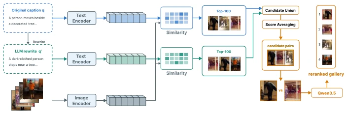
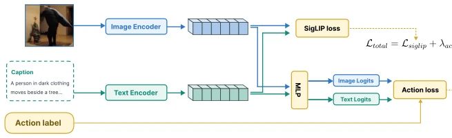
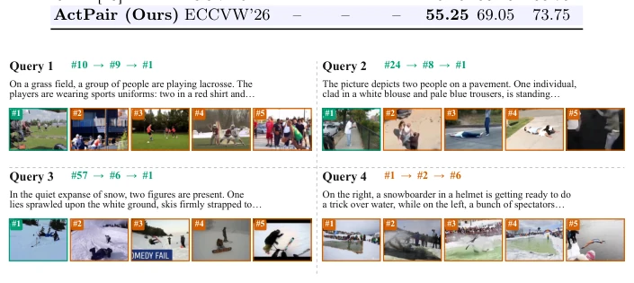

This ActPair paper attempts to use VLM to solve text-based pedestrian anomaly search, essentially patching the retrieval model. The authors cleverly avoided having the VLM perform retrieval directly, instead adopting a three-step approach: first aligning action semantics, then dual-path query fusion, and finally pairwise reranking. The results are indeed impressive, achieving an R@1 of 88.62% on the PAB dataset, significantly outperforming CMP [23]. However, a few criticisms arise: this method relies on LLMs to rewrite queries, so the inference cost is certainly not low, and although the pivot-promote algorithm claims to be linear, the worst-case scenario is still quadratic. Additionally, relying on action tags specific to certain datasets for supervision makes generalization questionable. Overall, it is a practical engineering improvement, but the theoretical depth is average, representing a victory for 'hyperparameter tuning experts'. Performance is acceptable on cross-dataset transfer, but there are still failure cases in describing complex spatial relationships (Query 4). Although the title does not mention robots, retrieval capability is crucial for the perception modules of embodied intelligence. It is worth referencing for scenarios pursuing extreme performance, but do not expect it to directly solve all long-tail anomaly behaviors.
The core difficulty of text-based pedestrian anomaly search lies in distinguishing behavior rather than appearance. Existing methods mainly have three significant shortcomings. First, pose-aware frameworks (e.g., CMP [23]) overly rely on isolated skeleton geometry, but in static images, without context, the same pose may correspond to different actions, existing a pose-semantic gap. Second, query rewriting methods (e.g., MVR [26], ReCQR [3]) often completely replace the original query, causing fine-grained details (e.g., specific clothing colors) in the original query to be lost, unable to complement. Finally, reranking strategies, existing works (e.g., SSDC [19], AnomalyLMM [6]) mostly adopt absolute pointwise scoring, requiring models to maintain global calibration scales, making it difficult to capture subtle differences. In contrast, directly comparing two similar candidates (pairwise) is more consistent with human intuition. Additionally, existing architectures are fragmented, lacking a unified coarse-to-fine framework. ActPair aims to fill these gaps, especially solving action semantic ambiguity and composition binding problems under static images, the latter referring to models having difficulty binding attributes correctly to subjects.
ActPair is a three-stage coarse-to-fine framework. The first stage is offline action and scene tag extraction, utilizing LLMs to standardize original tags into a fixed vocabulary, used for subsequent supervision. The second stage is action-aligned representation learning, based on SigLIP2 dual encoder, introducing multi-task objectives: SigLIP loss maintains image-text alignment, action tag supervision forces the model to focus on action discriminative features, cross-modal consistency loss (KL divergence) reduces background interference. The third stage is parallel late-fusion retrieval, simultaneously using the original query and LLM-generated context rewritten query, taking the Top-K union and averaging scores, balancing fine-grained details and context. Finally, pairwise multimodal reranking uses Qwen3.5-9B as a comparator, through the pivot-promote algorithm for recursive comparison of Top-10 candidates, only comparing candidates better than the current pivot, reducing computation. The whole process aims to bridge the gap between pose and semantics, improving fine-grained ranking through context grounding and direct comparison. Specifically, the rewritten query injects action and scene tags, forming a structured description, while the original query retains instance details. The reranking stage is not all-vs-all comparison for all candidates, but based on the current pivot dividing better/worse sets, recursively processing the better set, thereby controlling inference cost while maintaining accuracy.

Fig. 1: Overview of ActPair. An action-aligned dual encoder retrieves candidates from the original query and a context-grounded rewrite. Their rankings are fused before pairwise multimodal reranking with pivot-promote.

Fig. 2: Action-aligned representation learning. Image and text embeddings are opti- mized by the SigLIP2 objective, shared action supervision, and cross-modal action consistency.
Experiments were conducted on the PAB and RSTPReid datasets. PAB is a benchmark specifically for anomaly behaviors, containing 1.6 million image-text pairs. Baselines include CMP [23], SSDC [19], IRRA [4], etc. Metrics are R@K and mAP. Results show ActPair on the PAB test set reached an R@1 of 88.62% and mAP of 93.97%, better than all comparison methods, including CMP and SSDC specifically fine-tuned for PAB. In RSTPReid cross-dataset transfer, under Zero-shot, R@1 reached 55.25%, significantly better than CMP's 29.15%. Ablation experiments show action supervision is more effective than pose supervision (+4.19% R@1), Pairwise reranking better than Pointwise (+4.75% R@1). Additionally, on the AI City Challenge test set, it also achieved 84.88% R@1. Qualitative analysis shows that although most queries were successful, there are still failure cases in describing complex spatial relationships.

Fig. 3: Qualitative top-5 retrieval results across the three stages. The numbers indi- cate the ground-truth ranks after action-aligned retrieval, dual-view query fusion, and pairwise reranking. Queries 1–3 are successful cases, while Query 4 illustrates a failure on complex spatial and action-state constraints.